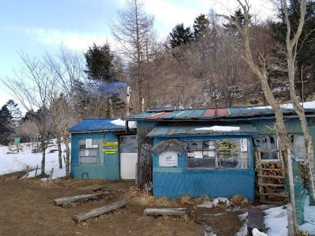
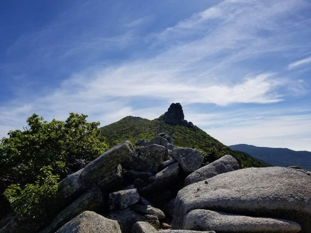

| 百名山ピークハント Vol.3: Episode 011-015 (The BBB: Breakthrough Bandwagon Books) | |
| 穂高 | |
| The BBB: Breakthrough Bandwagon Books (2018) | |
Ja panese 100 Great Mountains Vol.3 : Episode 0 11-015 (Jp)
（邦題『百名山ピークハント Vol.3: Episode 011-015 』）
Originally written in Japanese and translated by Hodaka
Photographs by Hodaka
Cover design by Tanya
Copyright © 2018 Hodaka / The BBB: Breakthrough Bandwagon Books
All rights reserved.
ISBN: 978-0-359-12583-8
Episode 011 : 大菩薩嶺
大菩薩嶺 （だいぼさつれい） は 、 東京から非常にアプローチしやすい山梨県に位置する標高 2 ,057m の百名山です。富士山の眺めが抜群ということでも知られていて、これまでに３度登りました。１、２回目に登ったときは、雲が多くて富士山は あまり はっきり見えませんでしたが、よく晴れた２月 （ 2018 年） のある日、３回目の登山で 、 ようやく満足のいく景色を見ることが出来ました。頂上付近は雪も結構積もっていて、冬ならではの景色が楽しめました。
大菩薩登山口から山頂に近い上日川峠 （かみにっかわとうげ） まで車で行くつもりでしたが、冬季はこの区間が通行止めで、急遽予定を変更して丸川峠を越えて山頂へ向かうコースで登りました。６時頃に到着すると既に数台の車が停めてありました。出発するとき、自分のすぐ後に到着した車のドライバーと今日の天候やコースなどの話をして別々のコースに進みました。
しばらくは少し急な傾斜の樹林帯を進んでいきますが、この辺は雪もなく順調に標高をあげていきます。徐々に登山道に雪が見え始め、路面が凍結しているところもあるので、慎重に進んでいきます。

２時間程で丸川峠に着いて、この峠に建っている「まるかわ荘」でアイゼンを装着しました。他の登山者も同様にそうしていて、ここから先は雪も多くて、アイゼンをつけないと登るのは困難そうでした。雪道もアイゼンをつければ滑ることなく、安心して登れます。登山道も分かりやすく、トレースもしっかりとあり、１時間半近く雪道を登っていきます。登っている最中は寒さを感じませんが、休憩すると一気に冷えて、ペットボトルのホットドリンクは凍りかけていました。
雪道にも飽きてきた頃、空が開けて大菩薩嶺の山頂に到着しました。山頂と言ってもここは樹林帯に囲まれて展望はな く、頂上という感じはしません。山頂の写真だけ撮って、ここから 10 分程先にある雷岩という場所に向かいます。
ここからの富士山と南アルプスの山々の眺めは最高です。富士山はこれまで大菩薩嶺に登山した中で一番よく見えて、甲府盆地の向こうには雪を被った南アルプスの山々がすぐ近くに見えました。この雷岩は神成岩とも書かれ、神が依る岩とされていて、かつてはここで雨乞いが行われました。また、雷雲の通り道だったことが由来ともされています。
そして、ここから大菩薩峠までの稜線歩きが大菩薩嶺登山のハイライトとも言える程の魅力が凝縮されています。天気が良ければ、富士山、南アルプスを臨みながら、緩やかな道を気持ちよく歩けます。
大菩薩峠には大きな標識があり、介山荘という山小屋もあって見晴らしも良く休憩するのに丁度よい場所です。この大菩薩峠は歴史がある峠で江戸時代には東京と山梨を結ぶ街道の難所になっていました。
頂上を超えると雪も減り、アイゼンを付けたまま岩肌を歩くことになるので慎重になり、歩行時間もだいぶかかりました。大菩薩峠でアイゼンを外していると、コースの反対側から登ってきた登山者が話しかけてきて、お互いが通ってきた登山道の雪の様子などの情報交換をしました。
２月の時期、 山小屋は閉まっていますが、去年（ 2017 年）の 10 月に登ったときは、大菩薩峠にある介山荘の主人と話す機会がありました。このときは以前に天城山で出会った山口県の男性（ Episode 004 参照）と合流するつもりだったのですが、台風の接近で男性は来ることが出来ませんでした。せっかく予定していたので台風が通過した直後、思った程空は晴れませんでしたが一人で登りました。このときは車で上日川峠まで来たので、朝早くに大菩薩峠に到着することが出来ました。山小屋の主人が東京の方向を指さして、「天気がいい日で朝のうちなら、この先にスカイツリーが見えるよ」と教えてくれました。この時間も空がまだ白く霞む前で、少し分かりづらかったですが、スカイツリーがうっすらと見えていたので、望遠レンズで撮影しました。また、「夜は甲府盆地の夜景がすごいから、ぜひいつか泊まってよ」と誘われたので、４回目に登るときはこの介山荘に泊まろうと思っています。
ここはお土産が売っていて見ているだけでも楽しいですが、百名山 の名前が全て書いてある暖簾 （のれん） を買いました。百名山を登る度に 、その山のピンバッジを買い集めています。 この暖簾の山名のところに取り付けたいと思っていて、百名山を達成した際にピンバッジが全て付いた暖簾を眺めるのを楽しみにしています。
上日川峠まで下山すると雪もかなり積もっていて、確かに車でここまでは来られそうもありませんでした。ここから１時間程歩いて車を停めている丸川峠に向かいます。もうアイゼンをつける必要もないと思って敢えてつけませんでしたが、ここの登山道はまだ雪が残っていて路面も凍結していたので、何回か転んでしまいました。
無事に下山した後は、お腹も空いていたので山梨県名物の " ほうとう " を食べるつもりでいました。ほうとうは 、 太くて長い麺をかぼちゃなどの野菜や肉と共に味噌仕立ての味で煮込んだ郷土 料理です。有名なほうとうの専門店に行こうとして調べると、車で 30 分以上かかりそうです。とりあえず向かっているとタイミングよく 、 大菩薩峠の登山口になっているバス停の横に「ほうとう」と書かれたお店がありました。
すぐに食べたかったので、中に入ると気さくな女主人が快く出迎えてくれました。中は下山してきたばかりの登山者も数人いて、客同士で山の話で盛り上がり、アットホームな雰囲気で居心地が良かったです。ほうとうはよく煮込んだ野菜がたっぷり入っていて、味噌味とよく合い、あっという間に完食して、冷えた体もあったまりました。
その後、車で数分のところにある「大菩薩の湯」という温泉に向かいました。この温泉は世界的にも珍しい最高級の高アルカリ性温泉で、お湯は肌に馴染む感じでヌルヌルして、疲れも取れた感じがしました。下山後のご当地名物と温泉は最高の組み合わせなので、これからも各地で楽しんできたいと思います。
Episode 012: 霧ヶ峰
雪の谷川岳に登りたくて、数日前から天気予報を気にかけていました。３月 （ 2018 年） 下旬に雨が続きましたが、ようやく晴れそうな日が来たので、そこに合わせて向かうことにしました。当日も天気予報で谷川岳のある群馬県は朝から晴れの予報でしたが、山専用の天気予報サイトでは谷川岳が悪天候になっていました。しかし、山の天気は変わりやすく、晴れるのを期待して、とりあえず向かうことにしました。谷川岳への一般的なルートはロープウェイで天神平まで行き、そこから 2 時間半程で山頂へ辿り着けます。
車での移動中は天気も良かったのですが、ロープウェイ乗り場へ着くと雪が舞い、ロープウェイの先は真っ白で何も見えない状態でした。天気予報を見ても午後まで回 復する気配はなく、今日の登山は諦めようと思い、行動食として買ってあった チョコレートを 戻る車内で つまんでいました。しかし、東京方面に向かうと綺麗な青空が広がっているので、やはり山に登りたくなってきました。再び天気を調べると、八ヶ岳方面は天気も安定しているようで、最も短時間で登れる百名山と言われる霧ヶ峰なら今からでも間に合いそうでした。そこで、急遽、群馬県から長野県へ移動することにしました。
向かう途中はずっと快晴で谷川岳の天気が不思議に思える程でした。霧ヶ峰の登山口へ向かうビーナスラインでも青空が晴れ渡り、途中にある展望台で写真を撮りながら標高 1 , 800m の車山肩という駐車場までやってきました。
霧ヶ峰は標高 1 , 925m の車山を最高峰とし、なだらかな山々が連なり、登山というよりハイキングを楽しめるという感じの山です。山頂へはロープウェイやリフトを使って登れますし、この駐車場からでも緩やかな坂を登れば 1 時間もかからずに簡単に辿り着けます。 車山の山頂には気象レーダードームが設置してあり、その円形の白い建造物はどこからでも目立つ存在となっています。
既にお昼の 12 時は過ぎていましたが、この一帯は見晴らしが良く、コースも分かり易いので特に不安はありません。雪もそれ程積もっていなく、登山というよりはスノーハイクを楽しみました。まずは標高 1 , 836m の喋々深山 （ちょうちょうみやま） へ向かいます。道は板で整備されていて、その上に雪が 1 0 c m 程積もった道を登っていきます。急な登りもなく、数十分で山頂に着きました。山頂は広く見晴らしも抜群です。ほとんど雪で覆われていたので、飛び出た岩に荷物を置いて、簡単に食事を取りました。夏は涼しく観光客も多いのでしょうが、 この 日は 1 組の家族しかいなくて、冬は静かで雪景色もいいものでした。
山頂で十分に景色を楽しんだ後は、この先の八島ヶ原湿原に向かいます。この八島ヶ原湿原をはじめとする霧ヶ峰の湿原は国の天然記念物に指定されており、夏には高山植物が咲き乱れ、その数は数百種類にも及びます。
喋々深山からの先は所々にスキー板の跡がありましたが、人が歩いた様子はなかったので、綺麗に積もった雪の上を歩いて行きました。たまに膝ぐらいまで雪の中に埋まることもあり、どこが道なのか分からないまま湿原方面に向かいました。といっても相変わらず見晴らしはいいので迷うこともありません。
歩いていると、雪の上に動物の足跡が続いているのを発見することもあり、いつどんな動物が通ったのかを想像して楽しみました。湿原の周囲はニホンジカが入れないようにフェンスで囲まれ、環境が守られていました。この先へ進むときは自分で鍵を開けてフェンスを通過し、また鍵を閉めて進みます。この時期の湿原は雪に覆われ、非常に広大で開放的でしたが、やはり高山植物が咲き誇る夏にまた来たいと思いました。
湿原沿いの通路を一人で黙々と歩いて進みます。これだけ遠くにいても、車山山頂の気象レーダーが目に入るので、現在地で迷う心配はありません。たっぷりと 3 時間近いスノーハイクを楽しんで 、 スタート地点の車山肩へ戻ってきました。
16 時頃でしたが、空はまだ明るく、後は頂上に登るだけなので、ザックを下ろして身軽になってカメラだけ持って登りました。ずっと目に入っていた気象レーダーの前にようやく辿り着きました。頂上からは雲に覆われた八ヶ岳、南アルプス、浅間山が綺麗に見え、今日歩いたコースも分かりました。

車山という名称は諏訪湖側から見ると大八車の形に似ていることに由来するそうです。その車山の山頂にある気象レーダーは富士山で観測していた気象レーダーの代わりとして 1999 年に設置されました。それまでは 1964 年から富士山のレーダードームで観測を行っていましたが、静岡県と長野県の車山の ２ ヵ所で代替することにより 1 999 年に運用を終えました。この白い円形のドームの中では直径 ４ m のアンテナが回転しながら電波を発射し風を測定して観測を行っていますが、この観測所は東京にある気象庁から遠隔操作を行っているので、通常この施設は無人です。観測されるデータは日々の天気予報をはじめ、集中豪雨などによる災害を未然に防ぐための防災気象情報の発表に利用されます。また、この円形の覆いはレドームと呼ばれ、風や雨、太陽光線などの自然環境からアンテナを保護する役割があります。
そして、気象レーダーの奥には車山神社がありました。小さい祠などを山頂で見かけることはたまにありますが、この車山神社は鳥居をくぐると 4 本の御柱で囲まれた社殿があり、山頂にあるものとしては大きな神社だと思いました。日本の高度成長期にこの地域もドライブやスキーを目的にした観光産業が進んできましたが、この車山神社は時代の変遷によって、現在ではここに訪れる人たちと住民の安全を願ってあがめられています。
だいぶ太陽も傾いて風も強くなってきて、カメラを持つ手が凍えてきましたが、遅く登ったこともあって、日が沈む前の静かな山頂の様子を堪能出来ました。
Episode 013: 日光白根山
4 月 （ 2018 年） 下旬、全国的に晴天の予報が出ている日に登る山を、その前夜に検討していました。前回、断念した標高 1 , 977m の谷川岳 （ Episode 012 参照） を真っ先に思いつきましたが、ネットで調べてみると 、 だいぶ雪も溶けているようでした。また雪山を楽しみたいという思いもあって、標高 2 , 5 78 m の日光白根山に行くこと にしました。日光白根山はロープウェイを利用して、その山頂駅から 登頂することも出来ますが、この時期はロープウェイも運航してないので、人も少なく静かな登山が期待できそうなところも決め手となりました。
大型連休となる GW （ゴールデン・ウィーク） の始まりでしたが、夜中に出発した おかげで混雑しそうな日光のいろは坂や中禅寺湖もスムーズに通過し、 登山口まで快適に着くことが出来ました。ここの登山口の標高は 1 , 735 m で、スタート地点から雪道で始まっていました。
しばらくは雪の平地が続き、雪に覆われた雑木林を登っていきます。木の枝に付いている目印を頼りに進みますが分かりにくい箇所もあり、雪のトレースがなければ少し迷ったかもしれません。出来るだけ踏み固められた雪道を進んで行きますが、それでもたまに踏み抜きをしてしまいます。踏み抜きとは、雪道を歩行中に足がすっぽり雪の中に埋まってしまうことで、沈み込んだ足を引き抜くたびに余分な体力を消耗してしまうので、出来るだけ避けたいものです。
思っていた以上に雪が深く、踏み抜くと股まですっぽり 埋まってしまう箇所もありました。徐々に急な登りになって、２時間近く登って、弥陀ヶ池へと出ました。この池は水面が凍っていて、正面には日光白根山がそびえ立ち、一息つくには格好の場所です。
弥陀ヶ池ではしばらく休憩して、他の登山客と写真を撮り合いました。ここの標高は 2 , 317m 。 頂上まで 2 00 m 以上急な登りが続くので、アイゼンを装着して頂上を目指します。
前にベテラン風な 5 人のグループが先行していて急斜面を登り切るところで、自分もその後に続きました。どうやら、そのルートは地図にはないコースで、かなり急な斜面でしたが、踏み跡も階段のように付いていたので大丈夫だろうと楽観的に考えていました。しかし、徐々に角度が上がり、急斜面になってくるとかなりの高度で、上下を見ると急に恐怖感を覚えました。
バランスを崩すと一気に下まで滑落しそうで、アイゼンを何度も雪にキックして足場を固定し、ストックは一番短くして雪に刺しながら這うような感じで少しずつ登っていきました。途中休んで周りを見渡すと、急斜面の遠くには雪を被った山々の景色に癒されながら、なんとか雪のない岩肌まで辿り着きました。そこから下を見ると 、 よく登ってきたと思える程の斜面でした。
登山道から外れた岩場をザイルを使って断崖を登っている登山者もいました。ここから頂上までは登山道にほとんど雪はなく、急な岩場を登って行くので、アイゼンも外しました。
頂上には多くの登山者がいました。自分が登ってきた ルートから登る人はほとんどいなかった ようで 、 思ったよりも 登山者がいた のが少し 意外 でした。
この日光白根山は関東以北で最も標高が高く、正式名称は白根山ですが、一般には草津白根山と区別するために日光白根山と呼ばれています。 3 ヵ月程前 （ 2018 年 1 月） に噴火があった草津白根山と同様に活火山で、火山湖である五色沼や弥陀ヶ池が山中にあり、夏には山頂から美しい水色が目に入ります。また、火山湖の周辺には高山植物が咲き乱れますが、日光白根山に多く自生していることから名付けられたシラネアオイは、鹿の食害により壊滅状態になり、今では電気柵を設置したり、苗を移植したりして保護活動が行われています。
頂上は火山らしく荒々しさが残った岩場の地形で、眺望は アルプス山脈まで見渡せ 、どこを眺めても最高の景色が楽しめます。 目の前には百名山のひとつ で、中禅寺湖のすぐ側に立つ 男体山 が 、 ひときわ存在感をはなっています。
日光白根山と標高が書かれた山頂標識のところで、 登山者達が交代で写真を撮り合います。その標識のあたりは狭いですが、少し離れた岩場はスペースが十分に広くて、多くの登山者がここで休憩して昼食を取っていました。
自分も男体山を目の前にして、ここで食事を取り、気が向いては撮影をしました。それから、地図に載っている一般的なルートの五色沼経由で下山することにしました。
日光白根山は信仰と結びついた山なので、山頂近くには白根山神社の小さい祠がありました。雪も溶けてきていますが、雪渓を所々に見ながら岩場を下っていきます。
しばらく進むと、雪の斜面をトラバースする必要が出てきました。トラバースとは山の斜面を横断することで、滑落の危険があるので十分に注意する必要があります。登りのときのような傾斜の雪道で、再び恐怖を感じる程でした。雪にはトレースが付いていたものの、滑落したら先の見えない谷底へ一直線で、慎重に一歩一歩、靴のエッジを効かせて進みます。バランスを崩すのが怖くて後ろを振り返ることも困難でした。どうにか無事に渡り切り、その後は樹林帯になると雪が深くて、踏み抜きに苦戦しながらも順調に高度を下げていきました。
雪の上には登山靴の跡がずっと続いていますが、ところどころで滑り跡が突いていることがありました。これは雪山を降りる方法の一つで"シリセード"と呼ばれるもので、脚を前に出して踵でスピードをコントロールしながら、お尻で滑り降りる方法です。程よい角度があれば一気に楽に下山できます。ちなみに立ったまま足を使って滑る方法は"グリセード"と呼ばれます。
早速、シリセードを試してみましたが、ソリで滑っている感覚で楽しみながら一気に降 りられ、時間も短縮出来て、五色沼に到着しました。この五色沼は夏には 綺麗な 水 色ですが、この時期は水面が凍っていて、周囲の雪とマッチして迫力ある景色で、スマートフォンで撮影しました。これは、一眼レフカメラでも収めておきたいと思い、サイドバッグから取り出そうとしたところ、バッグの中は空っぽでした。
サイドバッグのチャックが空いていて、さっきシリセードで滑り降りたときに弾みで落としたのに違いありません。これまで登山中にカメラを紛失したことはなかったので、血の気が引くような思いで、かなりのショックでした。最近撮った山の写真や今日の写真も記録されていますし、何よりもとても気に入っていたカメラなので、なんとしても見つけ出すしかありません。
誰か下山して来る人がいれば尋ねようと思いましたが、そのような気配はなく、仕方なく再びアイゼンを装着して、せっかく滑ってきた斜面を登り始めました。バッグから飛び出た際に、カメラが滑り落ちたかもしれないので、ゆっくり周囲を見ながら慎重に登っていきます。下山するのに、まだ２時間 以上はかかりそうなので、ここで時間を浪費したくはありません。 30 分以内には見つけるつもりで、しばらく登っていくと、意外にもあっけなく雪道の真ん中に落ちているカメラを発見しました。安堵感から思わず力が抜けて、そのまま雪の上に膝まずきました。それからは、もうシリセードをする気にはなれず、雪道を歩いて下山しました。
五色沼でアイゼンを洗って、弥陀ヶ池へ向か う途中で鹿を見つけました。あまり逃げる様子もなく木の陰からこちらの様子を伺っていました。そこからは順調に進んで暗くなる前に下山することが出来ました。
今回 は、雪山を楽しめたことはもちろんですが、 急斜面の恐怖やカメラを落としたことなど思い出深い登山となりました。
Episode 014: 巻機山
梅雨入り前 （ 2018 年） の晴天の日に、日帰りで往復できる 、新潟県 と群馬県の境にある巻機山 （まきはたやま） へ登ってきました。この巻機山は機織姫の伝説が伝わる上越国境の名峰として知られ、 2000 m に満たない標高ですが、優美で大らかな山容で人をひきつけます。
麓の南魚沼市の旧六日町・塩沢町は古くから織物が盛んで、「山中で機 （はた） を織る美女を見た」という伝説が麓の集落に残り、それが山名の由来となったと言われており、巻機山は機織りや養蚕 （ようさん） の神として地元で信仰されてきました。
昔、若者が病弱の母のために薬草を探しに山奥に分け入り道に迷ってしまいます。すると、山中で機織りをしている美しい娘と出会います。娘を背負って後ろを振り向かなければ麓まで導くと言われますが、この若者 は途中で振り向いてしまい、片目が盲目になってしまった、という 伝説が残っています。
前日の夜に高速の SA （サービスエリア） で車中泊をして、明け方の暗いうちに新潟県に入り、のどかな田園風景を見ながら登山口へ向かいました。 ４時半頃に到着すると、駐車場は 100 台程のスペースがある広さで、既に 10 台以上は停 まっていましたが、この早い時間でも次々に車がやってきました。
事前に山の状況を調べたところ 、 一部で雪は残っているようですが、アイゼンやピッケルは必要ない程度らしく、わりと軽い装備で済みました。５時に出発する頃には、もう十分に明るく、朝日が気持ちよかったです。
すぐに分岐点があり、コースが２つに分かれていました。一般の登山者向けの井戸尾根コースと 、 難易度が高い天狗尾根 コースです。後者のコースは規制が多く、また、十分な装備が必要なため 、今回は一般のノーマルルートから登ることにしました。
新緑が眩しい樹林帯の中を登って行くと、１時間程で５合目に着き、そ こからは急峻な谷を落ちる滝が見えました。写真を撮っていると、ちょうど 谷間から太陽が昇ってきました。
その先の六合目は展望台になっていて、巻機山 の隣に位置する割引（われめき）岳が綺麗に見えて、休憩するにはちょうど いい場所でした。そこから、しばらくは樹林帯を登り、スタートから２時間程で七合目に到着しました。ここまで来ると森林限界を超えていて、展望が開けて気持ちよく登れます。その先は急勾配で、途中で木の長い階段になり、丹沢山の " バカ尾根 " を思い出しました（ Episode 003 参照）。かなり疲れていましたが、ゆっくり登って９合目に到着しました。ここには " ニセ巻機山 " という標識も立っているように、当然頂上ではありません。
ここまで来ればそれ程きつい登りはないので、素晴らしい稜線歩きが楽しめます。ここまでは辛い登山道だったので、ここからの景色には特に感動しました。少し雪道となり、その先には鏡のように空を映し出す織姫ノ池と呼ばれる池塘群 （ちとうぐん） が現れます。水芭蕉 （ ミズバショウ ） が咲き、多くの登山者がここで足を止めて写真撮影をしていきます。
織姫ノ池から少し登って行くと、不意に御機屋（おはたや）と呼ばれる山頂広場が現れ、数人の登山者がベンチに腰をおろして休んでいました。そこには、 1 , 967 ｍと書かれた山頂標識が立っていて、どう見てもここが巻機山の山頂だと思 ってしまいます。ところが、最高地点となる本当の山頂はここから 10 分程歩いた別の地点にあります。事前に調べていたので分かっていましたが、それを知らずにここで下山してしまう登山者もいるそうです。実際に今回そのことを初めて聞いて、驚いている登山者もいました。
せっかくここまで登ってきたのに最高地点を見ないで下山するのはあまりに空し過ぎます。というわけで、早速この先の本物の山頂を目指しました。池塘が点在し開放感がある草原のような道を進んで行くと、そこには石が積まれただけのケルンがあるだけでした。言われなければここが山頂とは分からないでしょう。
山頂標識が御機屋にあるのは、植生保護のためか、展望がいいからなのかと思いましたが、古くから機織りの神を祀ってきた信仰上の理由により御機屋を山頂としてきたからだそうです。さらに、このケルンの先の牛ヶ岳山頂まで向かってみました。この素晴らしい稜線歩きは以前会津駒ケ岳（ Episode 006 参照）を思い出します。距離的にもそんなに離れていないので、山容が似ていても不思議ではありません。

ケルンから御機屋に戻り、反対方向には割引岳という山があります。ここへ行くには雪がまだ多くて、アイゼンが無ければ危険という情報も聞いていたのですが、雪の状態や斜面を見る限り、慎重に進めば問題なさそうです。だいぶ足も疲れていましたが、 ここまで来たら行かないわけにはいきません。途中で割引岳の全容を見ら れますが、険しく尖 っていて巻機山とは異なる山容で、高度感もあり見晴らしも良かったです。
早朝から登り始めたので、お昼前に下山を始めました。登るときに写真を撮った織姫ノ池で再び写真を撮りました。登りとは違って池塘に雲が映り、また違う絵になり天空の楽園といった感じでした。
その後は単調な道をひたすら下っていきます。他の登山者と抜きつ、抜かれつを繰り返して本当に長く感じる下山でした。

その後、駐車場で案内があった温泉に行くつもりでしたが、他の登山者も来て混雑すると思ったので、ガイドブックに載っていた他の温泉に向かいました。すると、ほぼ同じペースで下山していた男性も来て、同じタイミングで温泉に入りました。その男性は茨城県から来て、自分と同じように前日の夜に高速の SA で車中泊をしていたそうで、湯船につかりながら、しばらく山談義で盛り上がりました。
もうすぐ関東地方も梅雨入りするので、今日のような快晴の登山は梅雨明けまで出来そうにありませんが、しばらくは今回の山行の余韻に浸れそうです。
Episode 015: 金峰山
早い梅雨 （ 2018 年） が明け、日帰りで山梨県にある金峰山 （きんぷさん） に登ってきました。金峰山に登るのは２回目で、今回は去年、常念岳に登ったとき山小屋で知り合い、一緒に食事した登山者（ E pisode 00 8 参照）と登ることになりました。その登山者とは、その時の写真を送り合って繋がっていましたが、関西から東京勤務となって、関東の山にも登れる機会が出来たことで、今回一緒に登りました。この日は夕方から予定があるとのことで、日帰りで簡単に登れる近場の金峰山を選びました。
金峰山は標高 2 , 599m で 、山頂にある巨大な岩が積み重なったような五丈石が特徴的な、 ひときわ 目を引く存在です。頂上までの登山道はいくつかあり、東側の大弛峠（ おおだるみとうげ）からのコースが最短路なので、ここから頂上を目指します。この峠は標高 2 , 360m もあって車両が通行できる峠では日本で最高地点にあり、山頂までの標高差も少なく平坦な道が多いので、比較的簡単に登頂できます。
この日は気温 3 0 度を超す暑い日でしたが、登山口となる大弛峠に着くと、だいぶ空気は冷たく感じられました。来る途中は青空も見えていましたが、登山口では真っ白な雲に覆われました。往復４時間程で帰ってこられるコースタイムなので、出発も９時半と比較的遅い時間でした。まずは、シラビソの樹林帯を進んで行きますが、ほぼ平坦な道で歩きやすいので、足取りも早く、すぐに暑くなり上着を脱いで進んで行きます。
アップダウンを繰り返して、途中の朝日岳手前の岩場に出ると、展望が開けて素晴らしい眺めが楽しめます。雲に覆われていましたが、これまで景色が見えなかったこともあり、テンションが上がります。遠くに青空が広がり、突き出した岩が特徴的である瑞牆山 （みずがきやま） も近くに見えました。天気が良ければ北には浅間山や八ヶ岳、南には富士山から南アルプスが見える絶好の撮影ポイントです。
そこから、急な下りを降りて再び金峰山の頂上へ登りが続きます。しばらくすると森林限界に達し、ハイマツが茂っているケルンの積まれた稜線へ出ます。このあたりになると青空は全く見えなくなっていました。大きな岩場の道をどんどん進んで行くと、遠くに金峰山のシンボルである五丈石が見えました。霧に覆われ、完全に見えなくなったり、霧が少し晴れてうっすらと全容が浮かび上がったりしていました。
20m もあるこの巨大な五丈石は、近くで見ると圧巻で何故こんな所にこんな大きな岩があるか不思議で仕方ありません。その整った形から人工のものと思ってしまう程です。霧の中に浮かぶ様子がかえって神秘的に見えました。以前、登ったときも霧の中で、近くにいた人もそう言っていたので、なかなか青空に映える五丈石を見るのは難しいようです。
同行した登山者がコーヒーを飲むのにミルを持参していて、豆を挽いて本格的なコーヒーを作りました。豆から挽いたコーヒーは味わいがあって、五丈石を眺めながら贅沢な時間を過ごして帰路につきました。
金峰山から下山した数日後、ネットで何気なく金峰山のことを調べていると、ある人の ブログ で青空に浮かぶ 五丈石 の写真を見つけ、その美しさに心惹かれて、やはり青空に映える五丈石を見たくなりました。
それから数日後、ある晴れた日に次の百名山である瑞牆山を登る際、金峰山も近くにあるので別のコースから再び五丈石を目指しました。その日は見事に快晴で、前回よりも暑くなる予報だったので朝の ５ 時前には登り始めました。この コース は途中の富士見 平 小屋を拠点に金峰山と瑞牆山のそれぞれの山に登ることが出来るのです。
金峰山の頂上へは、標高差が前回は約 240 m だったのに対し、今回は約 1 , 200m もあり、本格的な登山といった感じでした。スタート直後はしばらく樹林帯の中を進むので、あまり暑さを感じずに済みました。空は吸い込まれそうな青空が広がっていて、五丈石を見るのを楽しみにしながら登って行きます。
樹林帯を抜けると一気に展望が開け、さらに進むと素晴らしい絶景に出会えます。南面が断崖絶壁となっている千代ノ吹上（ちよのふきあげ）と呼ばれる場所で、地球の自然の凄さを感じる美しい造形美が見れる迫力ある風景です。
この場所にはこんな伝説が残っています。昔、女人禁制の金峰山に夫婦で登ろうとして、この付近で女房の千代が滑落してしまいました。夫はこれを神の祟りとして恐れ、断食して必死に祈ると、谷底から吹き上げられて千代が戻ってきたと言われています。
千代ノ吹上からは金峰山と瑞牆山が一望出来、あちこちから岩が生えてるような独特な景色に魅了されました。遥か先には富士山もはっきり見えています。そして、登山道の先にはひときわ大きいあの五丈石の存在が際立っていました。

そこからは左右に絶景を見ながら岩を登っていく非常に楽しいコースでした。そして、ついに五丈石まで辿り着き、ブログで見たような青空に映える様子を見ることができました。
この石は信仰の対象とされていますが、岩の上に登ることは禁止されていません。しかし、この岩に登るのは簡単そうに見えて、これがかなり難しいのです。足をかける足場がない程、岩が大きいので、多くの登山者が挑戦しますが、ほとんどの人が途中で断念します。
自分も過去２回、試したことがありますが、やはり難しく無理はしないで途中で諦めました。今回、再び挑戦してみました。
いつものように中段までは簡単に登れますが、そこから ３ ヵ所難所があります。足をかけられない大きな岩にはタイミングよく飛び移ったり、バランス良くつかまりながら順調に進み、 最後は 一段高くなった岩場によじ登る感じで、とうとう岩の上まで辿り着くことが出来ました。今回はあっけなく登れてしまったという感じでした。岩の上は平らになっていたので、寝転んだりしてこの絶景を楽しみました。達成感もあって、とにかく五丈石の上からの景色は別格でした。
金峰山は短期間で２度登り、違う山行を味わえて、非常に思い出に残る登山となりました。
***
より多くの写真を添えた登山記録は、以下の著者ブログでお読みいただけます。
http://hodakaclimber.blog.fc2.com
***
（本書は、 The BBB: Breakthrough Bandwagon Books のために書き下ろされたオリジナル作品です）